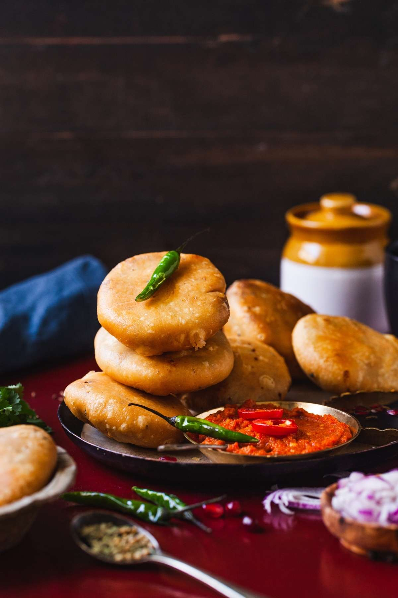

Ingredients for Pyaaz Kachori 🥟
- 1 ½ cups All-Purpose Flour (Maida) 🌾
- 2 tbsp Semolina (Rava/Sooji) 🌾
- 3 tbsp Ghee or Oil 🧈🍳
- 1/4 tsp Baking Soda (optional, for extra crispiness) 🥄
- Water (for dough) 💧
- Salt to taste 🧂
For the Filling:
- 2 Onions (finely chopped) 🧅
- 1-2 Green Chilies (finely chopped) 🌶️
- 1 tbsp Ginger-Garlic Paste 🧄
- 1 tsp Cumin Seeds 🌱
- 1/2 tsp Fennel Seeds (optional) 🌿
- 1/2 tsp Asafoetida (Hing) 🧂
- 1/2 tsp Red Chili Powder 🌶️
- 1/2 tsp Turmeric Powder ✨
- 1 tsp Coriander Powder 🌿
- 1 tsp Garam Masala 🌿✨
- 1 tbsp Amchur Powder (Dry Mango Powder) 🍋
- Salt to taste 🧂
- 1/4 cup Fresh Coriander (chopped) 🌿
- 1 tbsp Sugar 🯠(optional, for sweetness)
- 2 tbsp Oil (for filling) 🍳
Steps 🍴
- Begin by preparing the dough. In a mixing bowl, combine all-purpose flour, semolina, baking soda (optional), and salt. Add ghee or oil and rub it into the flour to form a crumbly texture. 🧈🌾
- Gradually add water and knead the dough until it is smooth and soft. Cover it with a damp cloth and let it rest for 20-30 minutes. 💧
- While the dough is resting, prepare the filling. Heat oil in a pan, and add cumin seeds and fennel seeds (if using). Let them splutter. 🌱🍳
- Add the chopped onions and sauté until they turn golden brown. 🧅
- Add ginger-garlic paste and chopped green chilies. Sauté for another 2 minutes until fragrant. 🧄🌶️
- Add red chili powder, turmeric powder, coriander powder, garam masala, and salt. Stir well and cook for 2 minutes to blend the spices. 🌶️✨🌿
- Add amchur powder (dry mango powder) and sugar (if using) for a tangy-sweet flavor. Mix well. 🍋🍯
- Let the filling cool completely, then add fresh coriander. 🌿
- Now, divide the rested dough into small equal-sized balls (about the size of a golf ball). 🌾
- Roll each dough ball into a small circle, about 3-4 inches in diameter. Make sure the center is slightly thicker than the edges. 🍞
- Place a spoonful of the onion filling in the center of each rolled-out dough circle. 🍅
- Carefully gather the edges of the dough and pinch them together to seal the filling inside. Roll it gently into a smooth ball. 🥟
- Heat oil in a deep frying pan over medium heat. Once the oil is hot, carefully drop the kachoris into the oil, one at a time. Fry them until golden brown and crispy, turning them occasionally to ensure even frying. 🍳
- Remove the kachoris from the oil and drain excess oil on paper towels. 🍽️
- Serve the crispy Pyaaz Kachoris hot with green chutney or tamarind chutney. 🌿🍯